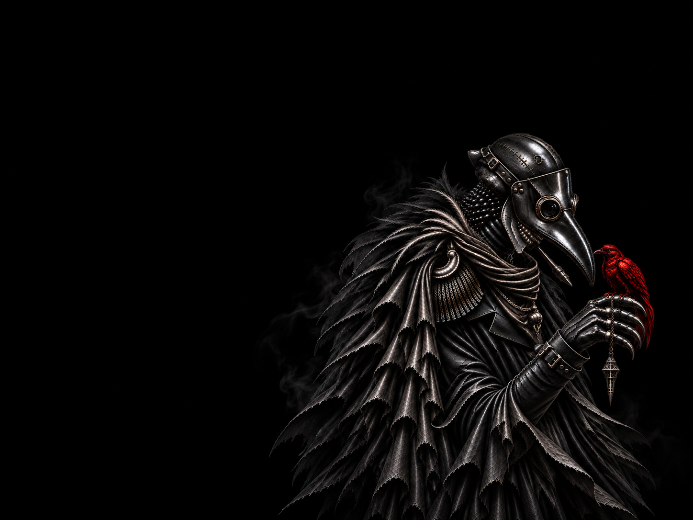

САМ ЗА СЕБЯ · ПРОВОКАЦИОННАЯ
ЧУМА
ЧТОБЫ ПОБЕДИТЬ,
ЕМУ НУЖНО ПРОИГРАТЬ.
Сам за себя
Одиночная · Провокационная
Провокация — Чума побеждает, если добивается того, чтобы его выгнали днём путём голосования. В момент своего изгнания Чума заражает всех участников Чёрной смертью и побеждает единолично. Если Чуму убивают ночью, его способность не срабатывает, и он покидает игру.
Чума не сражается ни за Мирных, ни за Мафию — его цель совершенно иная. Он должен заставить остальных поверить, что представляет угрозу, и спровоцировать всех на собственное устранение. Чем подозрительнее выглядит Чума, тем ближе он к победе.
Любой игрок за столом имеет право назвать себя Чумой, независимо от своей настоящей роли. Поэтому заявление «Я — Чума» ничего не доказывает и может использоваться как часть блефа. Настоящая Чума заражает всех участников Чёрной смертью только в том случае, если её выгоняют днём путём голосования. Если Чуму убивают ночью, заражение не происходит, и она покидает игру без победы.
Тебе нужно стать достаточно опасным, чтобы тебя захотели убрать, но не настолько очевидным, чтобы в тебе распознали Чуму. Провоцируй, противоречь, вызывай подозрения и заставь стол самостоятельно принять нужное тебе решение.